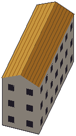
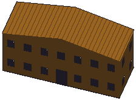

Techniczne podglądy rzeczywistej geometrii, fasad i dachu z generatora /test2/. Skala obrysu 1.0; bez mapy, kolizji ulic i dekoracji. Rasteryzacja programowa, nie zrzuty z gry.
Collegium Jana Pawła II: 1 skrzydeł, 0 niskich łączników, 3 kond.

Collegium Norwidianum: 1 skrzydeł, 0 niskich łączników, 2 kond.

Gmach Główny KUL: 4 skrzydeł, 0 niskich łączników, 2 kond.